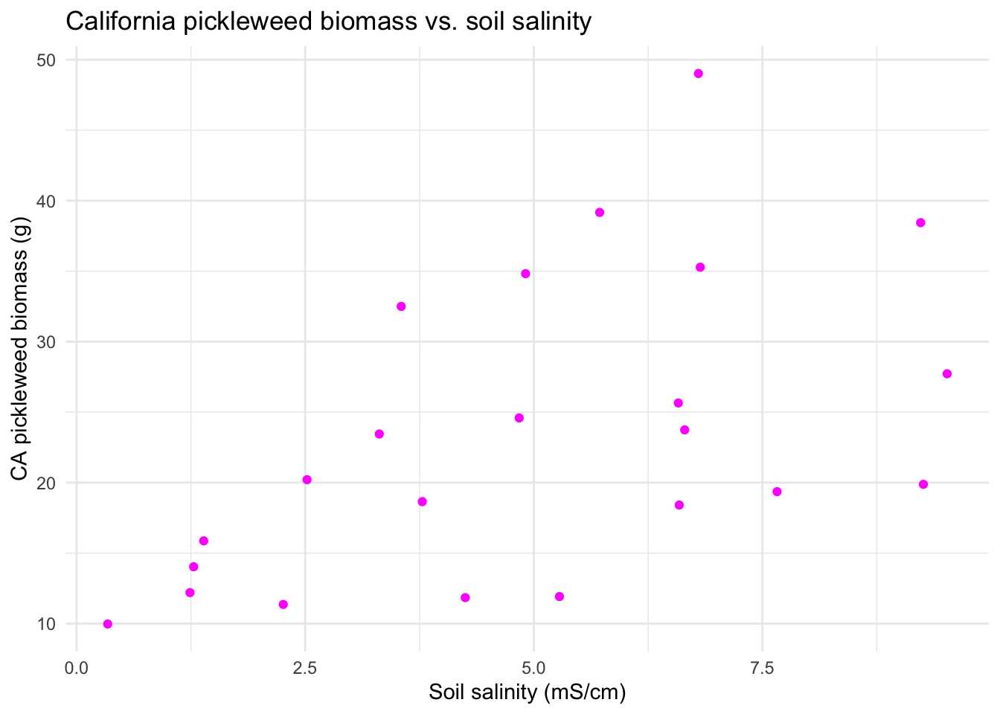
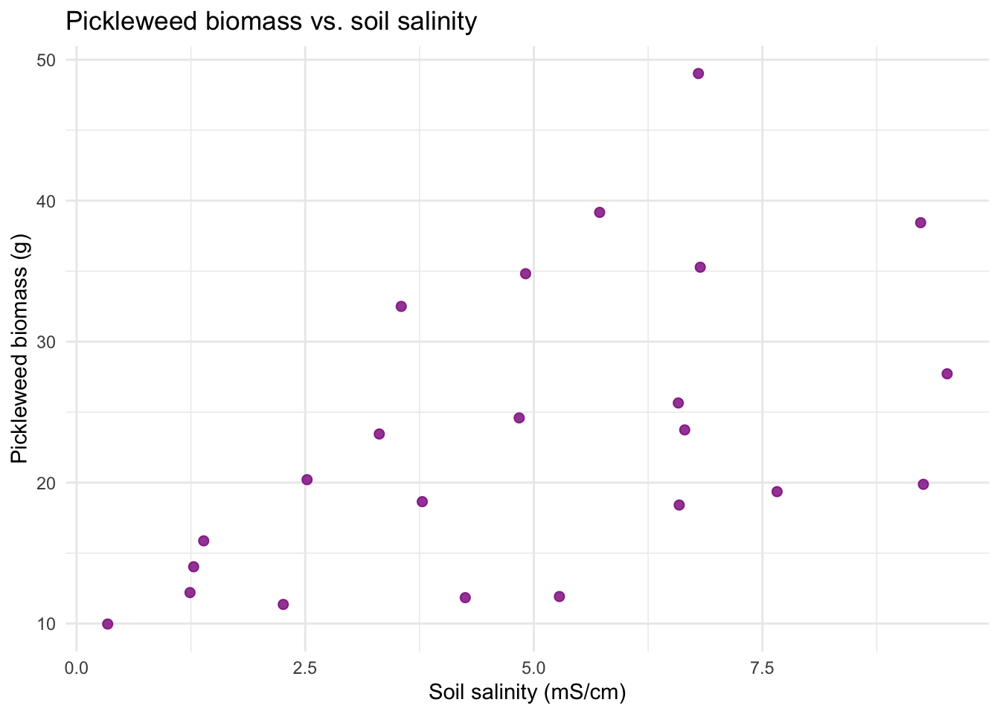
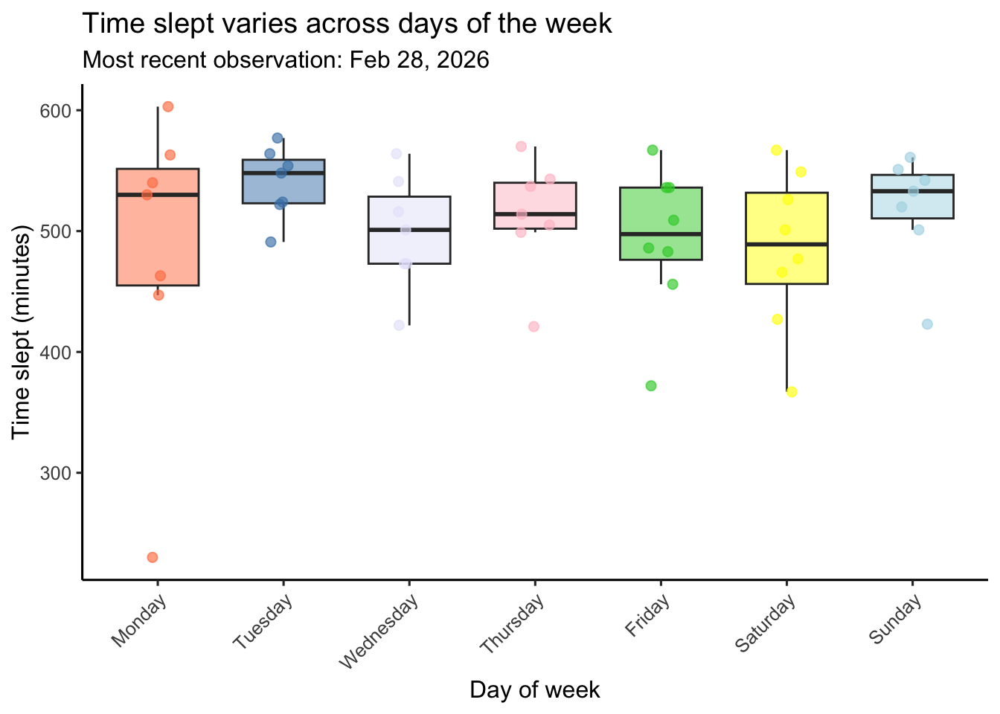
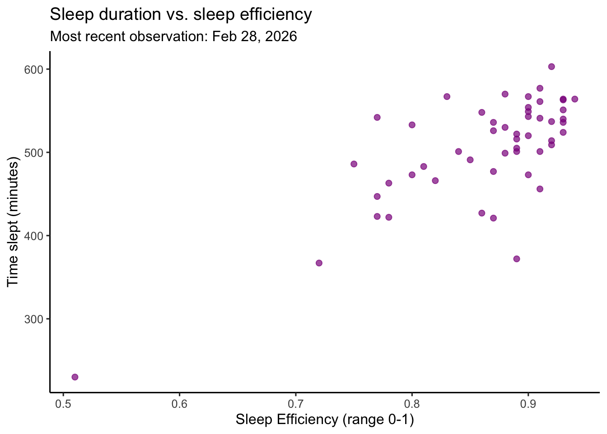

suppressPackageStartupMessages({
library(tidyverse) # reads in tidyverse package
library(here) # reads in here package
library(janitor) # reads in janitor package
library(readxl) # reads in readxl package
library(performance)}) # reads in performance package
# Stores the salinity data as an object called salinity
salinity <- read.csv(here('data',"salinity-pickleweed.csv"))
# Stores my personal data as an object called my_data
my_data <- read.csv(here('data',"193DS data - stress (3).csv")) Homework 3
Set-up
Problems
Problem 1. Slough soil salinity
You are working at a restoration site where you are managing planting of California pickleweed (Salicornia virginica) along a brackish slough (i.e. there is a mixture of fresh water and salt water).
You decide to measure plant growth for individual pickleweed plants by plucking an individual out of the ground and measuring the biomass (in g). You also measure salinity (as electrical conductivity in units of millisiemens per centimeter, or mS/cm) at the location in which the individual was growing. Admittedly, this isn’t a perfect study, but it’s what you can do with the time and resources you have!
a. An appropriate test
In 1-3 sentences, name the appropriate test(s) to determine the strength of the relationship between salinity and California pickleweed biomass (hint: there are two). Describe the differences between the two tests.
Be specific in your response to demonstrate your understanding of the variables in this question.
An appropriate parametric test is Pearson’s correlation coefficient (r), which assesses the strength and direction of a linear relationship between two continuous variables (soil salinity (mS/cm) and California pickleweed biomass (g)) assuming approximately normal distributions and independent observations. A non-parametric alternative is Spearman’s rank correlation (\(\rho\)), which evaluates the strength of a monotonic relationship using ranked values of salinity and biomass and does not require normality. Pearson’s r tests linear association on raw data, whereas Spearman’s \(\rho\) tests monotonic association based on ranks and is more flexible to non-normality and outliers.
b. Create a visualization
Create a visualization that would be appropriate for showing the relationship between soil salinity (in mS/cm) and California pickleweed biomass (in g).
In addition to using the correct geometries, be sure to:
- relabel the x- and y-axes and include units
- use different colors from the
ggplot()defaults - use a different theme from the
ggplot()default
ggplot(data = salinity, # uses salinity data
aes(x = salinity_mS_cm, # x is soil salinity
y = pickleweed)) + # y is soil pickleweed biomass
geom_point(color = 'magenta') + # changes color from default
labs(title = "California pickleweed biomass vs. soil salinity", # creates title
x = "Soil salinity (mS/cm)", # relabels x-axis
y = "CA pickleweed biomass (g)") + # relabels y-axis
theme_minimal() # changes from default theme
c. Check your assumptions and run your test.
In the order that is appropriate, create separate sections using subheaders to:
- check your assumptions
- run your test
In each section, write the code to check your assumptions and run your test as you see fit.
In the section in which you check your assumptions, write 1-3 sentences describing:
- which assumptions you checked
- how you checked your assumptions
- your assessment of your assumption checks
Part 1: Checking My Assumptions
# Fit linear model
salinity_model <- lm(pickleweed ~ salinity_mS_cm,
# response (biomass) ~ predictor (salinity)
data = salinity)
# uses salinitiy data
# Diagnostic plots
par(mfrow = c(2, 2)) # arrange plots in a 2x2 grid
plot(salinity_model) # generate plots based on salinity_model
I checked the assumptions needed for Pearson’s correlation by fitting the linear model salinity_model, evaluating the 4 diagnostic plots, and ultimately deciding that the assumptions were met. Based on the Residuals vs Fitted + Scale-Location plots, residuals seem homoscedastic (mild evidence of increasing variance but consistent enough across values) and linear as well as normally distributed based on the Q-Q plot (the points mostly follow the reference line). By looking at the Residuals vs Leverage (Cook’s distance) plot I determined there were no outliers that might influence model estimates or prediction.
Part 2: Running My Test
# Parametric Pearson's correlation test
cor.test(salinity$pickleweed, # pickleweed biomass variable from salinity df
salinity$salinity_mS_cm, # salinity variable from salinity df
method = "pearson") # specifies Pearson (linear assumption met)
Pearson's product-moment correlation
data: salinity$pickleweed and salinity$salinity_mS_cm
t = 2.8979, df = 21, p-value = 0.008605
alternative hypothesis: true correlation is not equal to 0
95 percent confidence interval:
0.1568265 0.7757682
sample estimates:
cor
0.5344778 d. Write about your methods and results.
In 1-3 sentences each, write about:
- which test you used, and why
I used Pearson’s product–moment correlation because both soil salinity (mS/cm) and pickleweed biomass (g) are continuous variables, and the goal was to determine the strength of the relationship between these variables. The diagnostic plots indicated that assumptions of linear relationship between variables, normally distributed variables, and independent observations were reasonably met with some minor deviations from homoscedasticity. This made Pearson’s correlation appropriate for evaluating this linear relationship.
- your interpretation of your test (along with the appropriate summary of the test in parentheses)
I found a moderate relationship (positive + linear) between soil salinity (in mS/cm) and California pickleweed biomass (in g) (Pearson’s r = 0.53, t(21) = 2.9, p = 0.01, \(\alpha\) = 0.05). This indicates that pickleweed biomass tends to increase as salinity increases, suggesting that individuals may perform better under higher salinity conditions.
e. Write about the implications of your test.
You’re working on a team of people at this restoration site who are also concerned about pickleweed planting. In 2-3 sentences, write what you would communicate to them about the results of this test and what it means for pickleweed planting success at your site.
Be cognizant of your audience as you are writing: what would they need to know to take action?
My analysis indicated a moderate positive relationship between soil salinity and pickleweed biomass (Pearson’s r = 0.53, t(21) = 2.9, p = 0.01, \(\alpha\) = 0.05), meaning that plants in higher-salinity areas tended to be larger in the data sample. This suggests that pickleweed is performing well under the more saline conditions typical of the brackish portions of the slough, so prioritizing planting in areas with moderate to higher salinity may improve establishment and growth.
f. Double check your own work.
In part a, you outlined two potential tests to answer this question about the strength of the relationship between soil salinity and pickleweed biomass. In part c, you chose a test, checked your assumptions, and ran one.
Try running the other test you listed in part a. Include the annotated code and output.
# Non-Parametric Spearman's correlation test
cor.test(salinity$pickleweed, # pickleweed biomass variable from salinity df
salinity$salinity_mS_cm, # salinity variable from salinity df
method = "spearman") # specifies Spearman (no linear assumption)
Spearman's rank correlation rho
data: salinity$pickleweed and salinity$salinity_mS_cm
S = 824, p-value = 0.003426
alternative hypothesis: true rho is not equal to 0
sample estimates:
rho
0.5928854 In 1-3 sentences, describe whether or not the two tests would have led you to make the same decision (about the null hypothesis) and interpret the results the same way (about the relationship between soil salinity and pickleweed biomass).
In your description, be specific about the tests, their components, and their relation to the variables.
Yes, both Pearson’s r and Spearman’s \(\rho\) reject the null hypothesis of no association (Pearson’s r = 0.53, t(21) = 2.9, p = 0.009, \(\alpha\) = 0.05; Spearman’s \(\rho\) = 0.59, S = 824, p < 0.003, \(\alpha\) = 0.05). Both tests indicate a moderate positive relationship between soil salinity (mS/cm) and pickleweed biomass (g). The Spearman result is slightly stronger which is consistent with the diagnostics showing mild heteroscedasticity.
Problem 2. Personal data
a. Updating your visualizations
Revisit the visualizations you created in homework 2.
Provide the code and output for updated plots with your most recent observations.
Note: if you think that a different plot type or different variables would be more interesting to visualize, then change your plots!
NOTE: I am pivoting my response variable to be time slept and my main predictor to be sleep efficiency with time spent stress remaining as an additional potential predictor.
You should have the annotated code and output for two plots.
For each plot, be sure to:
- label the x- and y- axes and provide units
- include the date of the most recent observation as a subtitle
- clean up the visual clutter (e.g. grids, backgrounds)
- use colors that are different from the
ggplot()defaults
Visualization 1 (categorical predictor variable)
# Clean data
my_data_clean <- my_data |> # starts with the raw personal dataset
clean_names() |> # standardizes column names (lowercase + underscores)
# converts day_of_week to an ordered factor + display days in order (Mon–Sun)
mutate(day_of_week = factor(day_of_week,
levels = c("Monday","Tuesday","Wednesday","Thursday",
"Friday","Saturday","Sunday"))) |>
# convert the column to Date format with the correct format string
mutate(date = as.Date(date_mm_dd_yyyy, format = "%m/%d/%Y")) |>
# mutates sleep eficiency to be a numberic variable
mutate(sleep_efficiency = parse_number(as.character(sleep_efficiency)) / 100)
# Collect the most recent date for the subtitle
most_recent_date <- my_data_clean |> # uses cleaned data set
summarise(max_date = max(date)) |> # computes most recent obs date
pull(max_date) # extracts most recent obs date
# Defines a list of colors to be used for each day of the week in the plot
week_colors <- c(
"Monday" = 'coral',
"Tuesday" = 'steelblue',
"Wednesday" = 'lavender',
"Thursday" = "pink",
"Friday" = 'limegreen',
"Saturday" = "yellow",
"Sunday" = "lightblue")
# ggplot base layer
ggplot(my_data_clean, # uses cleaned data
aes(x = day_of_week, # categorical predictor (day of week) on x-axis
y = time_slept_minutes)) + # response (time slept (min)) on y-axis
# creates boxplot
geom_boxplot( # creates boxplots by day
aes(fill = day_of_week), # fills color by day of week
width = 0.65, # sets box width
alpha = 0.50, # sets transparency so points are visible
outlier.shape = NA) + # hide default outlier dots
geom_jitter( # adds jitter points of individual observations
aes(color = day_of_week), # designates point color by day of week
width = 0.12, # jitters horizontally to reduce overlap
height = 0, # no vertical jitter
alpha = 0.65, # sets transparency for readability
size = 2) + # sets point size
# creates scatter points for each day of the week
scale_fill_manual(values = week_colors) + # applies custom fill colors
scale_color_manual(values = week_colors, # applies custom point colors
guide = "none") + # hides legend
labs(title = "Time slept varies across days of the week", # creates title
subtitle = paste("Most recent observation:", most_recent_date),
# creates subtitle with latest date
x = "Day of week", # creates x-axis label
y = "Time slept (minutes)") + # creates y-axis label + units
theme_classic(base_size = 12) + # cleaner theme
theme(axis.text.x = element_text(angle = 45, hjust = 1), # rotate x-axis labels
legend.position = "right") # keep legend on right
Visualization 2 (continuous predictor variable)
ggplot(data = my_data_clean, # uses cleaned data
aes(x = sleep_efficiency, # continuous predictor (sleep efficency) on x-axis
y = time_slept_minutes)) + # response (time slept (min)) on y-axis
geom_point( # plots individual days
color = "magenta4", # changes color to purple
alpha = 0.7, # sets transparency so points are visible
size = 2) + # sets size of points
labs(title = "Sleep duration vs. sleep efficiency", # creates title
subtitle = paste("Most recent observation:", most_recent_date),
# creates subtitle with latest date
x = "Sleep Efficiency (range 0-1)", # creates x-axis label
y = "Time slept (minutes))") + # creates y-axis label + units
theme_classic(base_size = 12) # cleaner theme
b. Captions
In text (not in code), write captions for both your figures.
Figure 1. Time slept varies across days of the week. Colored boxplots represent the distribution of daily time slept (minutes) for each day of the week (Monday–Sunday). Boxes display the interquartile range (IQR), horizontal lines indicate medians, and whiskers extend to 1.5 times the IQR. Semi-transparent colored points represent individual daily observations which are jittered horizontally within each day to reduce overlap. The subtitle indicates the most recent observation included in the dataset. Data represent personal daily tracking records collected between January–February 2026 using an Oura ring.
Figure 2. Sleep duration is associated with sleep effciency (as measured by the Oura Ring). Purple circles represent individual daily observations of time slept (minutes) plotted against sleep efficiency (ranging 0-1 with 1 indicating 100% efficency and 0 indicating 0% efficiency). Each point corresponds to a single recorded day. Sleep efficiency as defined by Oura is the percentage of time you were asleep while you were in bed. The subtitle indicates the most recent observation included in the dataset. Data represent personal daily tracking records collected between January–February 2026 using an Oura ring.
Problem 3. Affective visualization
In this problem, you will create an affective visualization using your personal data in preparation for workshops during weeks 9 and 10.
a. Describe in words what an affective visualization could look like for your personal data (3-5 sentences).
Inspired by warming stripes and quilt art I could create a visualization where each day could be represented as a horizontal strip of color. Color intensity could reflect time spent stressed and opacity of the strip could be determined by my sleep efficiency (measured as a % out of 100). For example less than an hour stressed could be a green shade and it could shift from yellow, to orange, to red as stress time is larger. The length of each strip of color could indicate the time spent asleep (longer strips indicating more time spent sleeping). These strips would be ordered chronologically, with the first observation in the middle of the square design mirrored across the horizontal middle to try to represent any patterns/trends over time.
b. Create a sketch (on paper) of your idea.
Include a photo of this sketch in your document.
c. Make a draft of your visualization.
Feel free to be creative with this! The one rule is that you may not use any code to create your visualization.
d. Write an artist statement.
An artist statement gives the audience context to understand your work. For each of the following points, write 1-3 sentences to address:
- the content of your piece (what are you showing?)
This piece visualizes my daily sleep duration and time spent stressed data arranged chronologically, to reveal patterns, fluctuations, and rhythms over time. Each day is represented as a horizontal strip of color, where the hue of the color reflects the amount of time I felt stressed (red/orange hues indicate more time spent stressed and green/blue hues represent less time spent stressed). The opacity of the strip will be determined by my sleep efficiency (will more efficiency represented by more opaque strips) and with the length of the strip representing how long I slept.
- the influences (what did techniques/artists/etc. did you find influential in creating your work?)
I was influenced by warming stripes temperature visualizations and quilt art, which use simple color gradients to communicate change over time in an intuitive and emotional way. I was also inspired by data-art projects allowing trends to be felt rather than just measured. My initial inspiration came from temperature color blankets I saw on the r/dataisbeautiful Reddit page I saw over the past summer that really stuck with me.
- the form of your work (watercolor, oil painting, crocheted object, etc.)
My visualization will be created digitally using the Sketchbook app on my iPad.
- your process (how did you create your work?)
I plan to use a grid background (which I will later deleted) to keep my strip spacing and length (indicating time slept consistent). The mean sleep efficiency (over my current sample of data) will mark the 50% opacity with more efficient days being more opaque and vice versa. Each block on the grid will indicate an additional 10 minutes slept and a change in hue by 10 towards a more red tone will indicate 15 additional minutes stressed.
Problem 4. Statistical critique
At this point, you have seen and created a lot of figures for this class. Revisit the paper you chose for your critique and your homework 2, where you described figures or tables in the text. Address the following in full sentences (3-4 sentences each).
For this section of your homework, you will be evaluated on the logic, conciseness, and nuance of your critique.
a. Revisit and summarize
What are the statistical tests the authors are using to address their main research question? (Note: you have already written about this in homework 2! Find that text and provide it again here!)
The statistical test in this paper is a Kruskal–Wallis test (to compare the three treatments), followed by pairwise Mann–Whitney U-tests for post-hoc comparisons. The response variable is periphyton (primary producer) net primary production and the predictor variable is Mediterranean barbel (small endangered predator fish species) density.
Insert the figure or table you described in Homework 2 here.
knitr::include_graphics(here('code',"pone.0117630.g005.png"))
b. Visual clarity
In 2-4 sentences, answer the question.
How clearly did the authors visually represent their statistics in figures? For example, are the x- and y-axes in a logical position? Do they show summary statistics (means and SE, for example) and/or model predictions, and if so, do they show the underlying data?
The authors clearly present the primary comparison by placing predator density categories on the x-axis and chlorophyll-a concentration on the y-axis, which feels like a logical and intuitive layout. The figure displays summary statistics (mean values) with error bars, representing standard error, and uses letter groupings (“a” = absent, “b” = barbels) to indicate statistically significant differences among treatments. While the summary presentation communicates statistical differences efficiently, it limits representation regarding the spread and structure of the raw data because it does not show underlying data points. making it difficult to assess sample size, variability distribution, or potential outliers.
c. Aesthetic clarity
In 2-4 sentences, answer the question.
How well did the authors handle “visual clutter”? How would you describe the the data:ink ratio?
The figure is visually straightforward and uncluttered, with minimal gridlines and clear labeling. The data-to-ink ratio is fairly high because most visual elements directly represent data (bars, error bars, group labels), and there are few unnecessary decorative components. However, the large, fully filled bars dominate the visual space and draw attention more to area than to the actual mean values. The bold primary colors also create strong visual contrast that is not tied to additional meaning, which makes the figure visually loud despite its otherwise simple and clear design.
d. Recommendations
In 2-4 sentences, outline what recommendations would you make to make the figure or table better. What would you take out, add, or change? Provide explanations/justifications for each of your recommendations.
I would recommend replacing the bar chart with a dot plot or boxplot that includes the underlying data points. This would display more information and allow readers to evaluate variability and sample size more directly. Additionally, using slightly more muted colors would improve accessibility without altering interpretation. The y-axis could also explicitly state what the error bars represent (e.g., ± SE), which would clarify the statistical summary being shown although this information is found below in the caption. These changes could increase interpretability of the figure.